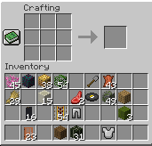
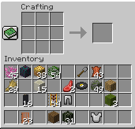
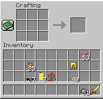

Plancraft
An evaluation dataset for planning with LLM agents

Comparison to other Datasets
Table 1:Comparison of different interactive datasets commonly used in agentic LLM evaluation. Each of these datasets expresses the goal or task in natural language and requires multi-step planning. We design Plancraft to provide a testing ground for which there exists both a natural language knowledge base and a handcrafted planner. Plancraft also includes a subset of the data that is intentionally unsatisfiable (Impossible Set), since the capacity to predict that there's no valid plan is important. Note that GAIA allows tool use, including web search, however a knowledge base on how to solve the task is not provided.
Most existing benchmarks for evaluating LLM agents focus almost exclusively on success rates: that is, the proportion of trials in which the agent achieved a goal state. Success rates measure whether the agent constructed a valid plan but do not measure the efficiency or the quality of that plan. Some environments allow an arbitrary number of incorrect steps, while others immediately terminate an episode if a wrong action is executed.
Reporting or measuring only success rates also introduces a dataset bias, as it implies that the solution to a given problem is easily verifiable, yet difficult to obtain. As a result, we argue that success rate alone is insufficient to capture the complexity of real-world scenarios. Each additional step of inference incurs non-negligible costs, so metrics should include more fine-grained assessments, such as how close the LLM's plan is to a handcrafted solution.
Furthermore, effective agent-based systems should recognise when a task is unsolvable, as many real-world tasks may lie beyond the agent's capabilities and indeed many real-world tasks might be difficult to verify as doable or not. Without the capacity to predict if there's no valid plan, an agent will incur significant costs in continually monitoring and replanning.
Plancraft
To create Plancraft, we implement the logic and visual representation of the Minecraft crafting GUI. Similarly to Prasad et al. (2023), we reconstruct the crafting process entirely in Python using game files and images of items obtained from the Wiki. Using image manipulation to overlay items on top of the inventory background significantly improves performance, as the observations do not require the Java game engine. Our environment has a one-to-one pixel mapping with the real Minecraft interface and supports multiple resolutions.
Assumptions
Plancraft makes a number of simplifying assumptions:
- Single Agent: There is a single agent in the environment, and any changes to the environment are a direct result of this agent's actions.
- Deterministic: Valid actions are always executed, and their effects are predictable.
- Observable: The crafting interface and inventory are fully observable, either through the text description or through the multi-modal image input.
- Sequential: Aligned with classical planning, each action is discrete and executed one at a time.
Action and Observation Space
The abstraction level chosen for the action and observation space has a great impact on the tractability of the planning problem. Other Minecraft environments, such as MineDojo (referenced by Prasad et al., 2023), provide a high-level "craft" command that doesn't require the agent to manipulate the underlying ingredients. Plancraft, on the other hand, requires the correct placement of ingredients in the inventory and, as such, provides a lower-level symbolic action space.
The two possible environment actions are smelt and move, and both
actions require a slot_from, a slot_to, and a quantity. This abstracts
control dynamics and focuses on planning and spatial reasoning.
Figure 1: Example flow of Plancraft. The agent can use the varying set of tools as described in its system prompt. The action descriptions and formats in the system prompt are only present if the action is allowed. The dialogue history is passed as a sequence of messages. Environment messages include the task goal and current observation (text or image). If the agent takes an action that does not impact the environment such as think or search, then the environment does not return an observation but a response based on this action.
Baseline Results
Table 2: Average Success Rates (SR) for different models and sets of actions available:
move (M), smelt (S), think (T),
search (SE), impossible (I). We also report the average count of special actions used, the average plan length, the
Action Efficiency (AE) and the average total number of tokens used. We group very easy and easy difficulty categories
together as `easy' and hard and very hard as `hard'.
Our results confirm that larger models, such as Llama 70B, outperform smaller models like Llama 8B in both task
success and efficiency in Plancraft. This advantage is further amplified by specialised actions such as
think and search.
The introduction of impossible highlights a trade-off: while enabling models to recognise unsolvable
tasks reduces token usage and increases efficiency, it disproportionately impacts smaller models like Llama 8B.
Fine-tuning smaller models, as shown with Llama 8B FT, significantly boosts task success but also reveals a key
limitation: the inability to effectively use new actions like think and search,
indicating that fine-tuning may overly constrain behaviour.
Additionally, our findings emphasise challenges in multi-modal settings. While text-only tasks highlight strong performance trends, raw image inputs, as seen with gpt-4o-mini IMG, underscore fundamental limitations of out-of-the-box vision-language models (VLMs) for effective planning.
Overall, our results underscore the complexity of bridging multi-modal inputs and decision-making in planning tasks.
For more details, please refer to the paper.